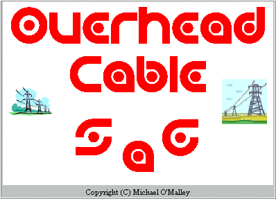

Oblotteration
is a simple game - my clone of a game called Flood It.
Changes for v1.1f:
In addition to clicking the the colour buttons at the bottom of the screen,
you can now also click any coloured rectangles in the game grid to change
the top left square (and all horizontally and vertically adjoining
squares with the same colour) to the selected colour.
For anyone who may be interested, here's the
VirusTotal Virus Scan report
which gives this software a 100% clean bill of health against all 55 virus and malware scanners (as I fully expected).
To download the program or see screen shots or view the readme file for more information, see the
Oblotteration (Game)
section of my web page.
Hope someone (in addition to me) enjoys playing this cool game ...
12-Jun-2021 ::
More Bad Software Fixes:
FireFox v89
I have been using computers since the very early 1980's, and have used tons
of software that was "hard to use" and not "user friendly" over the years.
Software was "hard to use" and not "user friendly" back then because the
machines were so primitive. When you've got 48 KB of RAM for everything
including the OS, the application, and the data, you can only do so much.
But some software - even today - seems to go out of its way to
frustrate and annoy users.
Microsoft Windows
is a prime candidate here for so many reasons,
one of which for removing WinHLP support
(the help file format Windows used for 25+ years and which
would add a paltry 1 MB to the total install size of Windows,
which on my laptop tips the scales at 26 GB !).
In addition, for users like me who still value WinHLP support,
and go out of my way to install it on modern Windows,
Windows routinely and automatically deletes the WinHLP support
I specifically installed - without notifying or asking me -
when major updates are installed.
Every few months, I have to reinstall WinHLP support on my machines.
There are many other frustrations with Windows - like why Windows Explorer has
to keep changing and messing with my default view all the damned time.
Shame on you Microsoft ! Shame !
The latest software to really frustrate and annoy me is
Firefox v89.
For me, Firefox has become very crash prone lately,
crashing multiple times per day. This is very frustrating.
But Firefox v89
takes this frustration to another level,
because it adds extra spacing between tabs, menus, and bookmarks,
and does not provide a simple way to reset it back to how
it was in all prior versions of Firefox. Bookmarks menus that used to fit neatly on a screen, now extend way beyond the bounds of the screen.
Shame on you Mozilla ! Shame !
Anyway, to restore the menu, bookmark, and tab spacing in
Firefox v89:
In Firefox type this in the address bar:
about:config
-> click Accept Risk and Continue
search for:
browser.compactmode.show - double click it until is says "true".
search
browser.proton.enabled - double click it until is says "false".
search
browser.proton.contextmenus.enabled - double click it until is says "false".
(This last option fixes the huge spaces between Bookmarks in the Bookmarks menu)
Right click on Title bar
-> Customize Toolbar
-> right at the bottom (middle), click the Density combobox and select
"Compact (not supported)".
Your tabs and bookmarks, spacing, etc will be back to normal.
Hopefully other people out there will find this useful.
FireFox users almost certainly will.
Special thanks once again to my 311 licensed users !
8-Jun-2021 ::
Email sent to ALL Sag Calculator Licensed Users - 221 unique email addresses
To ensure everyone knows about
Sag Calculator's 20th Anniversary
and associated video,
I have just emailed ALL of Sag Calculator's Licensed Users (221 email addresses):
----- Forwarded message -----
From: Moose OMalley
To: Moose
BCC: <221 unique email addresses>
Sent: Tuesday, 8 June 2021, 2:18:05 pm AEST
Subject: Sag Calculator news - 25th anniversary, Free Training Videos, etc
See my web page for details:
https://rebrand.ly/MoosesSoftware
Have a nice day. :)
Mike "Moose" OMalley
____________________________________________________
Moose's Software Valley - Established July, 1996.
* Email: Moose_Software _AT_ yahoo.com.au
* WEB Site: https://rebrand.ly/MoosesSoftware
* Reddit Forum: https://www.reddit.com/r/MoosesSoftware/
* LBRY Channel #1 MoosesValley: https://lbry.tv/@MoosesValley:0
* LBRY Channel #2 LBRY_Tutor_Helper: https://lbry.tv/@LBRY_Tutor_Helper:e
* YouTube Channel: https://www.youtube.com/user/MoosesValley/playlists
* GitHub Projects: https://github.com/MooseValley?tab=repositories
___________________________________________________
Already I can see that the results aren't terrific.
So far, 40 of the 221 (18.1%) of the emails bounced because the email addresses are no longer valid
or because the company servers reject emails from external sources.
Perfectly understandable ... some of these email addresses were used over 10 years ago,
and companies are becoming increasingly paranoid about external emails (and rightly so).
6-Jun-2021 ::
Sag Calculator Training Videos are now FREE
If anyone tries to pay for these on any future purchases (Registration Forms),
then the training videos will not be charged.
Special thanks once again to my 311 licensed users !
UPDATE Tue, 08-Jun-2021, 01:39 PM: Change all training videos to PUBLIC on YouTube, and use the latest YouTube embed code in my web page to make sure the videos embed correctly. Update the YouTube-DL download commands to include all 5 videos.
5-Jun-2021 ::
Sag Calculator 20th Anniversary
v1.0 of Sag Calculator was released on 1-Sep-2001, and here we are 20 years later. In this special 20th anniversary video I discuss:
Retrospective: how did the Sag Calculator project begin, how did sales go in the early days,
Where are we now ?
The Future ... v3.7 ?, v4.0 ?, iPad ?, Android Tablet ?, Mac OS ?, Linux ?
Special thanks to my 311 licensed users !
Also add my GitHub Pages link to the links at the top of my main web page:
12-May-2021 ::
Mother's Day - These Are The Mother's Days Of Our Lives - Music Film Clip
Featuring 2 lovely mothers, a bunch of beautiful doggies, and 2 sons, enjoying a delicious lunch in the park for Mother's Day. Photos and silent video clips with music overlay.
Special thanks to Freddie Mercury and Queen for a great song. (One of my favorite songs of all time).
Song / Music:
Queen, These Are The Days Of Our Lives (1991).
Used without permission - of course. How on Earth would an Average Joe like me ever get permission to use this song ??? Impossible !
My video has a copyright strike - of course - and I am more than happy to give any money my video generates to Queen.
RIP Freddie
29-Apr-2021 ::
Thought for today: Don't let IDIOTS talk you out of doing what YOU want to do !
I've made lots of mistakes in my life ...
but this was one of the doozies:
When I was finishing university (1986),
I had a good amount of savings built up
because I had worked on a farm for several years
(2 years part-time and 1 year full-time) before going to Uni,
and also because I worked as a barman (up to 40 hours per week)
while studying at university. By the time I finished Uni,
I had over $10,000 AUD in my bank account,
which was getting around 10% interest or so on term deposits.
At this time, you could buy a nice house in inner-Brisbane for $45,000,
so my $10K was really significant savings !! Easily enough for a big deposit on a house.
(Today that same house would be $1.8 million).
But at this time, back in mid-1986,
Microsoft
(MSFT)
had just gone public and I was excited about this and
was right on the verge of
putting all of my money into Microsoft stock ...
but all of my friends at Uni - all Computer Science majors -
sneered and laughed at me for this "crazy" idea.
They took the piss out of me for months about this ...
and from then on, whenever someone had a really crazy idea or did something really stupid, they'd be like
"Oh well, at least you didn't bet the farm on a company like Microsoft, hey Moose ???".
If I had done it - if I had put my $10,000 into Microsoft stock -
the shares would now be worth over
$25 million (excluding dividends, etc).
This is pretty shocking, I had never taken the share price history which included stock splits and done the calculations before today.
I thought the total would be maybe $500K ... not $25 million !!
Oh boy !
Yep, I still kick myself about this often ...
Yes, I'm an idiot. But my friends are much bigger idiots.
I'm an idiot because I let even bigger idiots talk me out of something that
I knew was a golden opportunity. I could see the massive potential ...
But they could not see it.
They were completely clueless about how big Microsoft was going to become.
If they were History or English Literature or whatever majors, this would be excusable. But they were all Computer Science majors ... they all had IBM-PC clones at home, they had all been using MS-DOS for several years, they had used Microsoft's software and compilers for several years, and they had seen / used Microsoft Windows 1 ... But they could not see the big picture or how personal computers and software were going to grow.
These are the same guys who started calling me "Moose" as well ...
(because I looked like Moose from the Archie comic books).
Anyway ... special "thanks" to Tom S, John P, Rowan, and others for keeping me poor.
(I am soooo tempted to give your full names here so everyone knows who you are).
And I'd bet $1 MILLION that if I confronted these guys about this today,
they would suddenly have selective amnesia and would have very conveniently forgotten all about this !
With "friends" like these, who needs enemies ...
A similar thing happened when I really started looking into
Bitcoin in early 2010 (about a year after it started) ...
but that's a story for another time ... different guys, but just as idiotic ...
29-Apr-2021 ::
#APPriLE - 2 x APPriLE videos to celebrate Apple Month
Recently created and released these 2 #APPriLE videos onto YouTube:
Apple 2 - Running Apple 2 Emulators and Games on Modern Windows PCs - Getting Started - #APPriLE,
https://youtu.be/wi8BV8-GKfA
25-Mar-2021 ::
Launch APPriLE and comMAYdore Retro Computing Tags
I love Marchintosh and DOSember for celebrating and highlighting Macintosh and PC/DOS computers and software. In the video below, I propose special months for Apple 1/2/GS and Commodore 64/Pet/Vic-20 computers: APPriLE and comMAYdore. What do you think ?
Support this idea by publishing content - videos, reviews, articles, blog posts using the appropriate tags: APPriLE and/or comMAYdore.
Long live the Apple and related computers ][ !
Long live the Commodore 64 and related computers !
24-Jan-2021 ::
Have I Been Owned ? / Have I Been Pwned ? (v0.004f)
With the parts of the world slowly descending into chaos, maybe
what we all need is some waves, water, tranquility, nature, piano, ...
Here's a video I recorded of my local beach.
Almost 20 minutes of watching the waves slide towards the shore
on a perfect sunny day, hardly any breeze, gentle waves ...
recorded on Kinka Beach
on the Capricorn Coast of Queensland, Australia at mid-morning,
just around high tide, on Mon, 25-May-2020.
And here are follow items I have recorded / prepared and uploaded to
LBRY
(a YouTube competitor without any of the non-sense):
No need to create an account on LBRY
- just click the little download icon below each item.
Play the MP3's on loop on your MP3 player and have a wonderful night's sleep.
I had to put the piano version on
LBRY
because YouTube seem to ping you for Copyright infringement
if you have any music in your video - even royalty free / copyright free
music that Camtasia Studio provides. Yes, seriously.
I'm amazed the original video that I uploaded to YouTube
hasn't been pinged for Copyright Infringement for using wave sounds.
Things really are that bad on YouTube now.
Like 99% of my work, all of the above are free.
Tell your friends. Share and use freely and enjoy and relax.
Maybe, just maybe, if some people had more waves and nature and piano
in their lives there would be more peace and harmony in the world today ...
we can only hope ...
LBRY
are a YouTube competitor without any of the non-sense,
and are so much better.
You can upload videos, audio, documents, HTML, PDF, etc
and share them for free or sell them.
If you create an account, you can get "rewards" for watching videos, etc.
21-Mar-2020::
Coronavirus: What if we did NOTHING? (22-Mar-2020, Thunderf00t)
Everyone - EVERYONE - needs to watch this video immediately:
The Global Mortality Rate might end up being higher than the
1-2% figure used in this video -
it is currently
11.46% according to the very latest data from
John Hopkins University (JHU)
if you only count the cases where the disease has run its course.
i.e. people have either recovered or died:
Mortality Rate = Deaths / (Deaths + Recovered)
NOTE: Doctors are being conservative and are slow to declare people as "recovered", and rightly so.
How do you tell if someone is recovered ? When they can stand up again ? When they leave the hospital ? When the feel well enough to walk outside again ? When they return to work ?
So the above formula results in a vastly inflated Mortality Rate to what it will hopefully be when more cases are declared "recovered".
I still believe there's no need to do any panic buying or hoarding, and certainly no need for ugly, sub-human supermarket fights or stampedes - as long as everyone stays calm and buys only what they need, the food and toilet paper will not run out.
However, apparently a large proportion of the population in the
US, Australia, the UK, ...
are living way beyond their means and
have little or no savings for rainy days -
WHOOPS !!! ... and people are getting scared and are panic buying and hoarding ...
so who knows what ugly, sub-human behaviour we might witness in the coming weeks / months ...
21-Mar-2020::
Coronavirus Spread World Map Animation and Latest News - 21-Mar-2020
Here is my updated simulation / animation of the spread of Coronavirus with
the very latest data from Johns Hopkins University (JHU).
Just uploaded my latest video to YouTube a few minutes ago:
For anyone who may be interested, here's the
VirusTotal Virus Scan report
which gives my software a 100% clean bill of health against all 58 virus and malware scanners (as I fully expected).
If your computer does not have Java installed, you will need to download and install the
FREE Java Run-Time Environment (JRE) from Oracle.
I recommend downloading the Java 8 Runtime using this link:
Developing this animation is a great little assignment project for my students
and I am still developing the tool, so I'm not going to place the Java source code
on a public Github yet.
I might even do a "Build Your Own Software" episode on how to develop this
animation.
Anyway, I will continue to monitor the situation and report future developments.
Just finished stepping through and exploring the latest data with the
world map simulation tool I've been working on, and
cannot help but worry if China is telling the truth about their data,
because the recent trends (in particular) are so different to other countries.
I've uploaded 5 videos to YouTube so far about this, and here's my latest video (uploaded to YouTube a few minutes ago):
The ZIP includes the Java JAR file, the latest data files from John Hopkins University (JHU),
and the world map.
For anyone who may be interested, here's the
VirusTotal Virus Scan report
which gives my software a 100% clean bill of health against all 61 virus and malware scanners (as I fully expected).
If your computer does not have Java installed, you will need to download and install the
FREE Java Run-Time Environment (JRE) from Oracle.
I recommend downloading the Java 8 Runtime using this link:
14-Mar-2020::
Corona Virus - potential under-reporting of cases, deaths, higher than reported mortality rates, etc
Note: According to the data I have, Coronavirus is NOT spreading exponentially.
At this stage, there is NO CAUSE FOR PANIC.
I have been monitoring the Corona Virus situation and graphing the data for several weeks,
and have developed a Coronavirus Spread World Map Simulation that allows me to
step through the data and see how the confirmed cases, deaths,
and recoveries change over time for each country.
My preliminary analyses and simulations suggest:
There is significant variation in Mortality Rates between countries
(over 7.1% in Italy, and only 3.9% in China), and,
The Mortality Rate is much higher than reported in the media, which typically ranges from 1% to 3%, and,
There also seems to be proportionally far more deaths in Italy,
and far less deaths in Korea and China.
And there seems to be proportionally
far less recoveries in Italy and Korea compared to China.
Here are screen shots of my simulation and spreadsheet:
Note: the largest red dot size (of 50 pixels radius) was selected
so that the countries with few cases still showed up as dots.
If I made the largest red dot radius 10 pixels, then the countries
with the low numbers would not even have enough cases to display a single red pixel.
Fig 2: Mortality Data and Graph in Excel.
The data I am using is the from John Hopkins University's (JHU) Github:
Is the data being reported by China and other countries honest / accurate / up-to-date ?
Are the numbers of cases, deaths being intentionally under-reported to the media ?
Under reporting the data to prevent public panic is one thing (there is more than enough hysteria already),
although this is generally not a good idea - people do not like to be lied to.
However, if one or more countries are grossly under reporting or blatantly lying about the number of
cases and/or deaths then this is another matter entirely.
Note Well:
There is so much turmoil because of this virus that JHU may be
having difficulty getting accurate / up-to-date data. This is perfectly understandable.
Links to the John Hopkins University data are provided above
and in the descriptions below each video in my Youtube channel.
Developing this simulation (see videos above) is a great little assignment project
for my students and I am still developing the tool, so I'm not going to place my
Java source code on a public Github yet.
I might even do a "Build Your Own Software" series
on how to develop this simulation / animation.
According to the data I have, Coronavirus is NOT spreading exponentially.
At this stage, there is NO CAUSE FOR PANIC.
Anyway, I will continue to monitor the situation and report future developments.
20-Feb-2020 ::
Web Site - Back-up Again .... with another Web Host: InfinityFree
Until this morning, my web site was hosted with 000Webhost,
but they like to play UPSELL games.
Over the last few days my web site has been down,
because 000Webhost claimed my web site was getting 10's of 1,000's of visitors a day
and therefore I needed $$$ Expensive Hosting Plan A
before my web site would be allowed to "go live" again.
However, StatCounter and my Rebrandly re-director both confirm the true numbers are much lower:
StatCounter says I averaged 3.1 visitors per day over the last 6 months,
Rebrandly re-director had 11 clicks - 11 visitors - in the past month (since 28-Jan-2020).
Certainly not the 10's of 1,000's 000Webhost claimed !
I kept emailing 000Webhost and telling them the facts, expecting an
apology email from them any minute, but there was no response ...
Days went by and all I got was their auto-generated emails
that were still trying to UPSELL me on expensive hosting plans.
No response. No support. No contact details on their web site.
Never the slightest evidence to support their bogus claims. Nothing.
It's not the first time this has happened to me. Many of my prior web hosts
also tried to play this dirty UPSELL scam on me, but I moved hosts each time.
So, farewell 000Webhost, and hello my new web host: InfinityFree.
Long may they reign (aka be host my web host).
Anyway, my apologies for any inconvenience caused by this.
Please bookmark / continue to use this web link to visit my web site
and all should be fine:
I used to use the "V3 URL" redirector service for my web site ... some long term visitors
may remember seeing "http://move.to/Moose" links in my emails, readme files, and web site.
This allowed me to use the same link, but behind the scenes point this to my latest web site url
when I had to change web hosts (they closed down, changed their TOS, jacked their prices up, etc),
which happened approximately every 5-10 years or so.
This "V3 URL" redirector service worked really well for over 10 years,
until suddenly the service suddenly went belly-up, and I could not change
the redirector's link.
A real pain that made it hard for people to find my web site for a while.
Anyway ... after a few years of being "redirector shy", I'm back in the saddle again,
and now trying the
Rebrandly Redirector service.
My web site address using this redirector service is:
So, if you see this link in my emails, readmes, YouTube, GitHub, Reddit, etc
then Don't Panic .... everything is fine. Click the link and it will take you to my web site.
27-Jan-2020 ::
WEB Page Links / Links History / HTML Tidy Ups
I've gone through my web page files and updated old / no longer working web links
to my latest web page location, or
replaced them with something like "web page location / url - edit: removed, no longer valid".
There's no point at all keeping the old links around. They don't work, and are not valid.
18-Jan-2020 ::
Sound Board Lenny - my 111th software title !!
This is my 111th software title to be released on my Moose's Software Valley web site !!
Not bad for a lone developer.
Sound Board Lenny
is a collection of buttons that play specific sounds, and buttons that play random sounds or stop all sounds playing. The sounds included are all FREE, public domain sounds.
These sounds are perfect for tying up phone scammers to waste their time and stop them from targeting others. Help fight the good fight ! Simply put your phone next to your PC's speaker and press buttons to let Lenny do the talking.
A Live Demo of the Sound Board Lenny is available on YouTube:
Click the "Play 1 Random" button to play a random sound.
Click the "Play Many Random" button to play random sounds
sequentially, one after the other, until you click the
"Stop Sounds" button.
Click the "Modern Life" button to keep playing random sounds
over the top of each other - pure chaos !!
Click the "Stop" button to halt playing all sounds.
This is the first public release but is labeled v1.05f to keep it in step with my
Sound Effects SoundBoard
which share the same source code base.
For anyone who may be interested, here's the
VirusTotal Virus Scan report
which gives this software a 100% clean bill of health against all 55 virus and malware scanners (as I fully expected).
To download the program or see screen shots or view the readme file for more information, see the
Sound Board Lenny
section of my web page.
Hope this new program is useful for someone out there ...
Sound Effects SoundBoard
is a collection of buttons that
play specific sounds, and buttons that play random sounds or
stop all sounds playing. The sounds included are all FREE,
public domain sounds. My friends and I have had a lot of fun
with these sounds, so maybe others will find them funny, useful,
or interesting at work, at home, and with friends.
A Live Demo of the Sound Effects SoundBoard is available on YouTube:
Click the "Play 1 Random" button to play a random sound.
Click the "Play Many Random" button to play random sounds
sequentially, one after the other, until you click the
"Stop Sounds" button.
Click the "Modern Life" button to keep playing random sounds
over the top of each other - it is hilarious and sounds a lot
like modern city life. Umm, if you had a lot of cats around ;)
Click the "Stop" button to halt playing all sounds.
Here are the changes for this 1.05f release:
Add full font scaling support (Ctrl+Mouse Wheel).
Add more sound effects.
Add "Play Many Random" button.
For anyone who may be interested, here's the
VirusTotal Virus Scan report
which gives this software a 100% clean bill of health against all 55 virus and malware scanners (as I fully expected).
To download the program or see screen shots or view the readme file for more information, see the
Sound Effects SoundBoard
section of my web page.
Hope this new program is useful for someone out there ...
31-Dec-2019 ::
End of Year Round Up ... Farewell 2019, Hello 2020 !!
Been a quiet second half of 2019 on my web page ...
still working on multiple software projects for
myself (and they will probably be released onto my web page sooner or later),
and a dozen or so Java applications I have been working on for a client.
In addition, I have also been recording a lot of Java, database development,
and other software development videos for my
MoosesValley YouTube Channel:
I've also been mulling over ideas for new content ...
As many of my regular visitors may know,
I have been very heavily involved in University Education over the past 20 years,
and I have often wished that I had made videos of the development of many of the
100+ programs available on my web page to help my students
understand how the whole development process works.
And there are probably others out there who would like to see this in actions and understand this.
So, I'm thinking of recording a series of new videos to demonstrate
the entire software development process
for particular software development projects that I have in mind,
from end to end including:
analysis,
requirements discovery - story boarding, prototyping, brain storming, ...
development,
on-line help,
context sensitive help,
Github version control,
automated Unit and Integration testing,
manual testing,
linking to databases: SQL Server, SQLite, MongoDB, etc,
using web services and web APIs: Google YouTube API, London Underground API, etc,
processing JSON and XML content,
graphics, sound, games, ...
cross platform development,
web apps (maybe),
basic editors (like TextPad, Notepad++, etc) and
advanced Integrated Development Environments (IDEs), such as Netbeans, Eclipse, etc,
go live / roll-out / release,
and various other topics.
As always, what I do depends on the response my work receives.
If people like it and provide nice feedback, then
I'll produce more.
If no-one cares or gives a damn, then I might as well go and do something else.
Anyway, stay tuned, got some BIG PLANS for 2020 !!!
16-Dec-2019 ::
Sag Calculator - 3 Questions - Can you Help ?

Some Sag Calculator questions / discussion points .... can you help ?
QUESTION #1:
Moose, I have utilized your sag program to sag all of our work in recent years. We have exclusively used the Tangent 1 and Tangent 2 method sagging straight-line tangent structures. We have an upcoming project that, for some our wire pulls, does not have a large amount of tangents, and most of the structures are running angles. How do you best recommend that we go about sagging this wire in running angle spans? We have a couple ideas, but wanted to see if you had any recommendations.
QUESTION #2:
Can I go 85% on a tangent one sag or is that out of the question. Span length is 350 m.
My reply:
85% is a little bit outside the recommended limit of 20%-80%.
From Sag Calculator's help file: "Ensure that the point of tangency to the cable at the sagging temperature will give good control ie between 20% and 80% of the span."
I don't have any information about how quickly errors will creep in as you go beyond these limits. If you can supply any information about this, then please forward it on to me and I will add it to the help file (giving you full credit).
QUESTION #3:
Hi Mike we are you mostly using tan 2 sagging methods. For our horizontal distance how
much can u move (to the side) off center line so we can see a clear view of all three phases
at one time we are sagging 500 KV four bundle 926.7 conductor.
Can anyone out there shed light on these questions / topics ?
Or, can you provide any hints, tips, information that would be useful in Sag Calculator's help file ?
If you can, then please
email me
and let me know
and I'll add your reply into Sag Calculator's help file and give you full credit for the answer.
Sag Calculator's Help File Needs You !
Sag Calculator's help file is not perfect or complete.
Can you provide any information that will make the help file better, more informative, or more useful ?
If you answer "YES", please
email me
and let me know.
25-Oct-2019 ::
YouTube Demo Videos - Robot Simulator and Solar System Simulator
Upload demonstration videos for two of my freeware programs:
My YouTube channel currently contains
76 videos (51 public, 5 unlisted, and 20 private videos)
in multiple playlists, including:
Delphi / Pascal
General Videos
Java Software Development
Moose's Soapbox
University
Video Captioning Project
but my main playlist is for
Java Software Development
which currently contains more than 25 public videos to
demonstrate and walk through and solve various problems
for my students.
Maybe other people trying to learn how to program in Java
might also find these useful ??
Or, maybe someone out there is having problems sleeping ....
my videos can be a great cure for insomnia (or so my students tell me).
More videos are being added regularly. (In the past 2 weeks, I have added more than 10 new videos).
24-Oct-2019 ::
Moose's GitHub: 69 repositories so far ...
Officially link my web page with my GitHub Repository:
51 PRIVATE repositories (projects)
which contain the source code to various Java projects I am working on,
some of which have been released to the general public on the
Freeware - cross-platform - Windows, Linux, Mac OS, Unix
section of my web page.
All of the AppleSoft BASIC source code for my
Freeware - Apple 2
software,
And eventually, before I shrug off my mortal coil,
all of the Delphi/Pascal, etc source code for my
Shareware / Trialware - Windows
software. There is only one program in this section now, and that's my
Overhead Cable Sag Calculator
software.
And any other software I have developed that might be interesting to others,
perhaps even incomplete, unfinished, projects of which there are dozens ...
Basically, anything that I have developed or started to develop
for my self could end up on my GitHub sooner or later.
NOTE:None of the source code for software that I have developed for
clients or employers
will ever end up on my GitHub. I do not have the right to release that code.
Any backups of that code still in my possession / still on any of my backup drives
will be destroyed.
People may be thinking: Moose, what are you doing ? Are you going somewhere ?
And my answer is: None of us live forever.
The Singularity -> Immortality (Wikipedia)
is coming, but sadly, I don't think it's going to happen soon enough for me.
So, I'm just taking steps to ensure my
software is in order, and as much of my source code as possible is available to anyone
who wants it or would like to explore it or who maybe could learn from it ....
before I depart this world.
In the future, maybe someone out there is still using my software ?
Maybe someone out there wonders how I coded things ?
Maybe someone out there wants to extend or build on one of my projects ?
By making my source code available, I'm making sure that my software
- the creative work of my life -
can live on ....
And if that benefits or helps someone in the future, then that's truly awesome !
Moose's Software Valley has now been live for 23 years.
That's an incredible amount of time on the internet.
I can only think of a handful of web sites who have been on-line longer than me.
Let's see ... there's Google .....
and ummmm, oh that's all I can think of ....
Considering Google launched ~2 years before me, ....
and made squillions of dollars selling search engine rank ...
while I focused on creating great, original software ... and made peanuts ...
Ohh god, don't even think about stuff like that ... :(
I did a search of "old web sites" 2 days ago, and came across:
404pagefound
(http://www.404pagefound.com/).
It turns out there are many 100's of web sites that are as old or
even older than mine that are still up and running.
Even the old Netscape web site I remember visiting in 1993
is still up and running ....
I never knew .....
Well done everyone involved !!
404PageFound started in May 2009 with the goal of uncovering dated websites (generally from 1994-2001) that are still active and have avoided major updates.
Thinking about that last part,
my web site has certainly avoided major updates,
it's got minimal CSS and JS (just for the buttons / menus above),
it's not database driven (even though I have been close a couple of times),
and all of the content is still all just basic HTML,
exactly the same as it was back in 1996.
Yes, my web site went through a redesign back in 2014:
but that was pretty minor: change focus to just be on my software,
removed all other content, drop the HTML frames,
improve the colours, and
adopt a better style for post banners (a nice HTML table).
Anyway, they did not have my web site web site in their list, so
I submitted my web site. Not sure how active they are or how long it
will take for them to add me ...
Anyway, will I be on-line for the 30 anniversary ??
Probably ... if my health holds out ... what else am I gonna do ?
You are visitor number:
since 2:00 PM (GMT+10) on Sep 2, 2013.
View My
Stats
This page is part of Moose's Software Valley official web site.
All files and software on my web site are subject to this warranty and disclaimer.
This page was last updated on
.
All logos, trademarks, symbols, etc are the property of their respective owners.
Keywords:
sag calculator, overhead cable sag calculator,
Windows, Linux, shareware, freeware, free software, free program, utilities, utility, value, bargain, deal, software, freeware, Raspberry Pi, Raspbian, Mac, DOS, MS-DOS, MSDOS
Moose's Software Valley, Mooses Software Valley, Moose Software Valley, Moose OMalleys Software Valley, Moose OMalley's Software Valley, Moose O'Malleys Software Valley, Moose O'Malley's Software Valley,
Mike Moose O'Malley, Mike Moose OMalley, Michael Moose O'Malley, Michael Moose OMalley, Moose OMalley

 to my
Freeware cross-platform software for Java Virtual Machine (JVM) page
which contains software for desktop, laptop, and tablet computers running Windows, Linux, Unix, and Mac OS.
to my
Freeware cross-platform software for Java Virtual Machine (JVM) page
which contains software for desktop, laptop, and tablet computers running Windows, Linux, Unix, and Mac OS.


 Add a link to my LBRY channel at the top of my main web page:
Add a link to my LBRY channel at the top of my main web page:

 Upload a brand new program,
Upload a brand new program,
 to a brand new section of my web site, my
to a brand new section of my web site, my